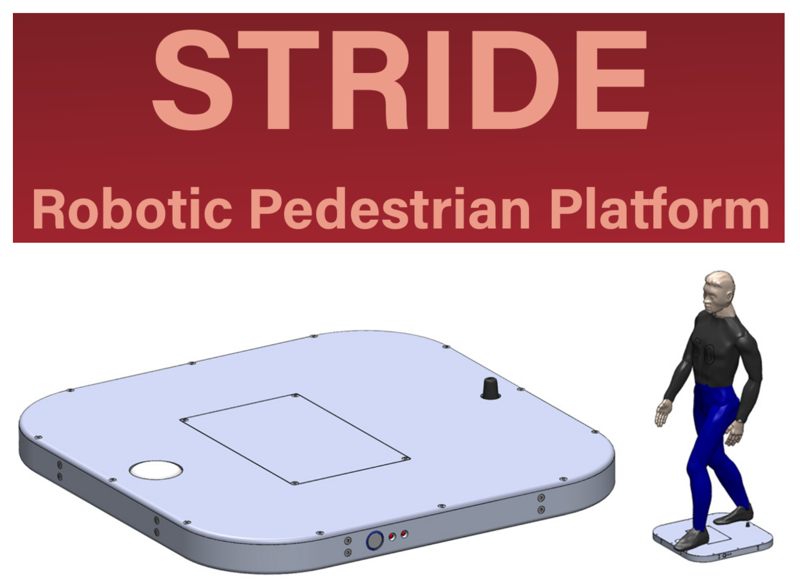
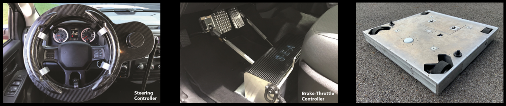

Welcome to S-E-A Automated Platforms
Stride is a robotic platform optimized to carry strikeable pedestrian targets for ADS and intelligent vehicle evaluation and development. The ultra-thin, robust chassis design allows vehicles to easily overrun the Stride without damaging the vehicle or the platform.
Features
Unmatched Versatility
-
The Stride can be deployed alone or coordinated with other platforms and vehicles in complex test scenarios.
-
Thanks to a cost that is a fraction of the competition, the Stride is ideal for fleet deployment in scenarios requiring numerous pedestrians.
Available with either open-source software or the S-E-A’s proprietary Impel software.
S-E-A Impel
S-E-A’s software provides a powerful interface capable of controlling and coordinating S-E-A’s entire ecosystem of robotics products, including platforms and driving robots.
Test engineers can easily script trajectory and speed profiles and coordinate movement between robotic platforms and test vehicles.
ROS
Created in ROS, the software provides an even more affordable alternative and allows maximum flexibility for customers who wish the use their own control or coordination software.
Also useful for educational and research applications, including those reaching beyond automotive testing
Models
- Stride - Low speed pedestrian platform
- Velo - Platform for bicycles (or pedestrians)
Specifications
Other Products in the Family

See Automated Steering Controller.
See Brake-Throttle Robot.